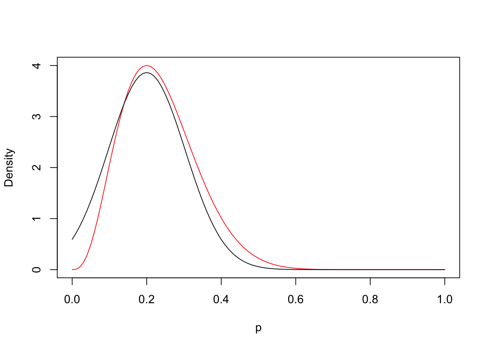
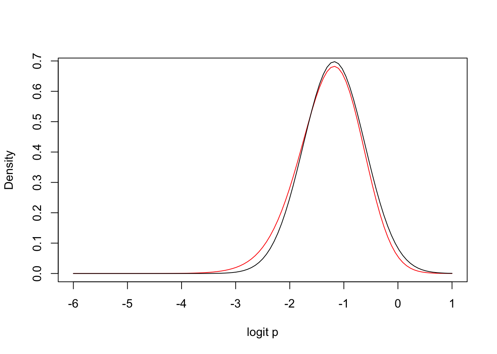
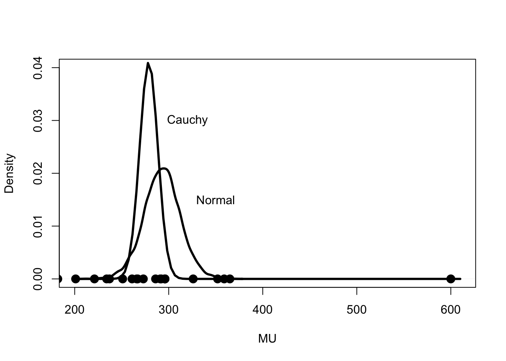

In this chapter, several strategies for computing and summarizing posterior distributions are discussed. One basic strategy is to find the posterior mode and then approximate the density with a “matching” normal density. A second strategy is to devise an algorithm for simulating directing from the posterior distribution. We describe the use of a popular simulation algorithm, rejection sampling, to implement this sampling.
8.2 Normal Approximation
8.2.1 One parameter problem
We derive a basic normal approximation to a posterior density in the single parameter case. Suppose we observe data \(y\) from a sampling density \(f(y | \theta)\) and the parameter \(\theta\) is assigned a prior density \(g(\theta)\). We are interested in developing an approximation to the posterior density \[
g(\theta | y) \propto g(\theta) f(y | \theta).
\] For simplicity of notation, let \(h(\theta)\) denote the logarithm of the posterior density, that is, \(h(\theta) = \log g(\theta | y)\). If \(\hat \theta\) denotes the posterior mode of \(\theta\), suppose we expand \(h(\theta)\) in a second-order Taylor’s series about the mode. We obtain the approximation \[
\log g(\theta | y) = h(\theta) \approx h(\hat \theta) + \frac{1}{2} h''(\hat \theta) (\theta - \hat \theta)^2 ,
\] where \(h''(\hat \theta)\) is the second derivative of the function \(h(\theta)\) evaluated at the posterior mode. This gives the following approximation to the posterior density: \[
g(\theta | y) \approx \exp\left(\frac{1}{2} h''(\hat \theta) (\theta - \hat \theta)^2\right),
\] which we recognize as a normal density with mean \(\mu = \hat \theta\) and variance \(\sigma^2 = \left(-h''(\hat \theta)\right)^{-1}\).
8.2.2 A proportion problem
Let’s illustrate this normal approximation for a proportion problem. Suppose we observe \(y\) from a binomial(\(n, p\)) distribution and a uniform prior is chosen for \(p\). Then \(p\) will have a beta(\(y+1, n-y+1\)) of the form \[
g(p|y) \propto p^y (1-p)^{n-y}, \, \, 0 < p < 1.
\] First we compute the log posterior density \(h(p) = \log g(p|y)\) to be \[
h(p) = y log(p) + (n - y) log(1-p).
\] Taking a derivative, we find that \[
h'(p) = \frac{y}{p} - \frac{n-y}{1-p}.
\] The posterior mode is found by setting \(h'(p) = 0\) and, solving this equation, we find that \(\hat p = y/n\). Next, we find the second derivative of \(h\) to be \[
h''(p) = \frac{y}{p^2}-\frac{n-y}{(1-p)^2} .
\] Evaluating \(h''(p)\) at the posterior mode, we obtain \[
h''(\hat p) = \frac{y}{\hat p^2}-\frac{n-y}{(1-\hat p)^2} = -\frac{n}{\hat p(1-\hat p)}.
\] So the approximation is the posterior for \(p\) is normal(\(\mu, \sigma^2\)), where \(\mu = \hat p\) and \[
\sigma^2 = \left(-h''(\hat p)\right)^{-1} = \frac{\hat p(1-\hat p)}{n}.
\]
Suppose a sample of \(n = 15\) is taken with \(y = 3\) successes. Figure 1 displays the exact beta posterior density (red line) and the normal approximation (black line). Clearly, the normal approximation does not reflect the substantial skewed shape in the beta density.
Code
library(LearnBayes)n <-15y <-3logpost <-function(p, y, n){ y *log(p) + (n - y) *log(1- p)}fit <-laplace(logpost, y / n, y, n)curve(dbeta(x, y +1, n - y +1), 0, 1,col ="red", ylab ="Density",xlab ="p")curve(dnorm(x, fit$mode, sqrt(fit$var)), add =TRUE)

8.2.3 Improving the accuracy of the approximation
One reason why the normal approximation is not suitable is that the support of a proportion is (0, 1) and we are approximating the posterior by a real-valued normal distribution. One way of improving the accuracy of the approximation is to transform the proportion to a real-valued parameter, and then apply the normal approximation to the posterior of the transformed parameter.
In this example, suppose we transform the proportion \(p\) to the logit \[
\theta = \log \frac{p}{1-p}.
\] The inverse of this transformation is \(p = \exp(\theta)/(1+\exp(\theta))\) and the Jacobian of this transformation is \(J = \exp(\theta)/(1+\exp(\theta))^2\). The posterior of \(\theta\) is given by \[
g(\theta | y) \propto \left(\frac{\exp(\theta)}{1+\exp(\theta)}\right)^{y+1}
\left(1 - \frac{\exp(\theta)}{1+\exp(\theta)}\right)^{n-y+1}.
\]
Suppose we apply our normal approximation to the posterior of the reexpressed parameter \(\theta\). One can show that the posterior density is approximately \(N(\mu, \sigma^2)\) where \[
\mu = \log\left(\frac{\tilde p}{ 1-\tilde p}\right), \, \sigma^2 = \frac{1}{(n+2)\tilde p (1-\tilde p)}, \, \, \tilde p = \frac{y+1}{n+2}.
\]
For the example of \(n = 15\), \(y = 3\), Figure 2 displays the exact posterior density of \(\theta\) (red line) together with the normal approximation (black line). This illustrates that the accuracy of the normal approximation is better for the real-valued parameter \(\theta\) than for the proportion \(p\).
Code
n <-15y <-3logpost2 <-function(theta, y, n){ p <-exp(theta) / (1+exp(theta)) (y +1) *log(p) + (n - y +1) *log(1- p)}fit2 <-laplace(logpost2, -2, y, n)curve((exp(x) / (1+exp(x))) ^ (y +1) * (1-exp(x) / (1+exp(x))) ^ (n - y +1) /beta(y +1, n - y +1), -6, 1,col ="red", ylab ="Density",xlab ="logit p")curve(dnorm(x, fit2$mode, sqrt(fit2$var)), add =TRUE)

8.3 Normal Approximation for Multivariate Posterior Distributions
The normal approximation developed in Section 7.1 can be generalized for a multivariate posterior density. If \(h(\theta)\) is the logarithm of the joint posterior density of a vector-valued parameter \(\theta\), then we have the approximation \[
h(\theta) \approx h(\hat \theta) + (\theta - \hat \theta)' h''(\hat \theta)(\theta - \hat \theta)/2,
\] where \(\hat \theta\) is the mode of the joint density and \(h''(\hat \theta)\) is the Hessian of the log density evaluated at the mode. Using this expansion, the posterior density is approximated by a multivariate normal density with mean \(\hat \theta\) and variance-covariance matrix \[
\Sigma = (-h''(\hat \theta))^{-1}.
\]
To illustrate this approximation in the multivariate case, consider the familiar problem of estimating the parameters of a normal density. We observe \(y_1, ..., y_n\) from a normal distribution with mean \(\mu\) and standard deviation \(\sigma\). For ease of exposition, denote the sampling variance as \(V = \sigma^2\) and we focus on the estimation of \((\mu, V)\). Assuming the usual noninformative prior \(g(\mu, V) = 1/V\), the posterior density has the form \[
g(\mu, V) \propto \frac{1}{V^{n/2+1}} \exp\left(-\frac{\sum_{i=1}^n (y_i - \mu)^2}{2V}\right).
\] To develop the approximation, we need to find partial derivatives of the log posterior density \(h(\mu, V) = \log g(\mu, V)\) given by \[
h(\mu, V) = -(n/2 + 1) \log V - \frac{\sum_{i=1}^n (y_i - \mu)^2}{2 V}.
\] The first partial derivatives are given by \[
h^{10} = \frac{\partial h}{d \mu} = \frac{\sum_{i=1}^n (y_i - \mu)}{V}, \, \,
h^{01} = \frac{\partial h}{d V} = -\frac{n/2+1}{V} + \frac{\sum_{i=1}^n (y_i - \mu)^2}{2 V^2}.
\] When we solve the equations \(h^{10} = 0, h^{01} = 0,\) we find the mode of the posterior to be \[
\hat \mu = \bar y, \, \hat V = \frac{\sum_{i=1}^n (y_i - \hat \mu)^2}{n+2}.
\] To get the approximation to the variance-covariance matrix, we need to compute the second partial derivatives and evaluate them at the posterior mode. The second partial derivatives are given by \[
h^{20} = -\frac{n}{V}, \, h^{11} = -\frac{\sum_{i=1}^n (y_i - \mu)}{V^2}, \, h^{02} = \frac{n+2}{2V^2} -
\frac{\sum_{i=1}^n (y_i - \mu)^2}{V^3}.
\] When we evaluate these partial derivatives at the posterior mode \((\mu, V) = (\hat \mu, \hat V)\), we obtain \[
h^{20} = -\frac{n}{\hat V}, \, h^{11} = 0, \, h^{02} = -\frac{n+2}{2\hat V^2}.
\] The Hessian matrix is given by [ h’’() = ] and the approximate variance-covariance matrix is found by inverting \(-h''(\theta)\): [ = ] We have that the posterior density of \((\mu, V)\) is approximately normal with mean vector \((\hat y, \hat V)\) and variance-covariance matrix \(\Sigma\).
We illustrate this approximation using a sample of completion times for 20 male participants at the New York Marathon. The logarithm of the exact posterior density of \((\mu, V)\) is contained in the function normchi2post() and we define a new function log.dmnorm() that computes the logarithm of a multivariate normal density. Figure 3 displays two contour plots – the solid line corresponds to the exact posterior and the dashed line corresponds to the normal approximation. Clearly, the accuracy of the normal approximation is relatively poor in this case, since it does not account for the right skewness in the variance \(V\). One could improve the accuracy of the normal approximation by reexpressing \((\mu, V)\) to \((\mu, \log V)\)
One advantage of the normal approximation is that it gives quick, often accurate, summaries of posterior distributions. As we have seen, the accuracy of the approximation is improved by transforming parameters to the real line.
Although we have discussed the common situation of sampling from a normal population, it is relatively common to observe outliers and statistical procedures based on the normal distribution assumption can be sensitive to outliers. An alternative error sampling distribution for symmetric data is the Cauchy family. This family has much flatter tails than the normal family and statistical procedures based on Cauchy error distributions will be relatively insensitive to the presence of outliers.
Suppose we observe \(y_1, ..., y_n\) from a Cauchy density with location \(\mu\) and scale \(\sigma\). The likelihood function of \((\mu, \sigma)\) is given by \[
L(\mu, \sigma) = \prod_{i=1}^n \frac{1}{\pi \sigma} \frac{1}{1 + (y_i - \mu)^2/\sigma^2}.
\] If we assign the noninformative prior of the form \(1/\sigma\) to \((\mu, \sigma\)), then the posterior density is given, up to a proportionality constant, by \[
g(\mu, \sigma | y) = \frac{1}{\sigma} L(\mu, \sigma).
\] To improve the accuracy of a normal approximation, we transform \((\mu, \sigma)\) to \((\mu, \log \sigma)\), obtaining the posterior density \[
g(\mu, \log \sigma | y) = L(\mu, \sigma).
\]
Let’s return to the problem of learning about the population of completion times for male runners in the New York Marathon. The sample of completion times is contained in the dataset marathontimes in the `LearnBayes’ package. Suppose we add the completion time of 600 minutes for an unusually slow runner to the dataset. What impact does this outlier have on our inference about the population location parameter \(\mu\)?
The R function cauchyerrorpost() in the LearnBayes package contains the definition of the logarithm of the posterior density of \((\mu, \log \sigma)\). One can numerically obtain the normal approximation to the posterior function by the use of the laplace() function. The inputs to laplace() are the function defining the log posterior, a starting guess at the posterior mode, and the data that is used in the log posterior function. When one runs this function, one approximates the posterior of \((\mu, \log \sigma)\) by a bivariate normal with the following mean vector and variance-covariance matrix.
As a byproduct of this approximation, one obtains that the marginal posterior density of \(\mu\) is approximately normal with mean 278.77 and standard deviation \(\sqrt{94.49}\).
Figure 4 displays two densities, the leftmost density is the posterior density of \(\mu\) with Cauchy sampling, and the rightmost density is the posterior density of \(\mu\) with the usual normal sampling assumption. The observed completion times are displayed as dots along the horizontal axis. Note that the inferences about the population location are significantly different with Normal and Cauchy errors. With the normal assumption, the point estimate at \(\mu\) is the sample mean \(\bar y\) and the posterior density is shifted to the right, trying to accommodate the large outlier. In contrast, with Cauchy sampling errors, the posterior density essentially ignores the outlier and the density better reflects the center of the remaining observations.
Code
normsim_MU <-function(d, m){ S <-sum((d -mean(d)) ^2) xbar <-mean(d) n <-length(d) SIGMA2 <- S /rchisq(m, n -1)rnorm(m, mean = xbar, sd =sqrt(SIGMA2) /sqrt(n))}sim_MU <-normsim_MU(time2, 10000)plot(density(sim_MU),xlim=c(200,610),ylim=c(0,.04),xlab="MU", main="", lwd=3)curve(dnorm(x, cfit$mode[1], sqrt(cfit$var[1,1])),add=TRUE, lwd=3)text(350, 0.015,"Normal")text(320, 0.03, "Cauchy")points(time2, 0* time2, pch=19, cex=1.5)

In this “single outlier” example, the normal approximation to the marginal posterior density of the location parameter \(\mu\) is pretty accurate. But for other examples, the normal approximation is clearly unsuitable. To illustrate a nonnormal posterior, suppose that one observes the following data:
Note that ten of the observations are in a neighborhood of zero and ten observations are in a neighborhood of 40. Again we assume the the observations are a random sample from a Cauchy(\(\mu, \sigma\)) distribution and the usual noninformative prior is placed on \((\mu, \sigma)\). Figure 5 displays contours of the exact joint posterior density and Figure 6 displays the marginal posterior density of \(\mu\). Clearly, the joint posterior density does not display the elliptical shaped contours of a bivariate normal density and the marginal posterior density of \(\mu\) is clearly bimodal. In future chapters, we will discuss the use of general-purpose simulation algorithms that are suitable when the posterior distribution has unusual shapes.